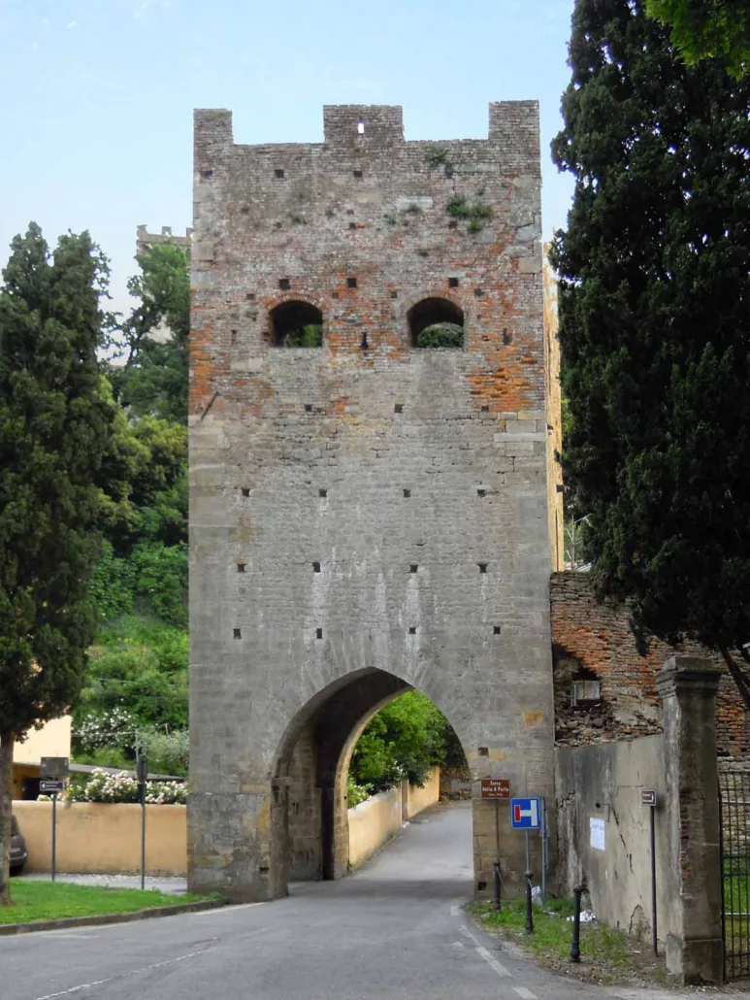

01
Storytelling
Storie e personaggi aiutano a scoprire il territorio. Non un elenco di date: un racconto che tiene insieme le tappe e dà un motivo per arrivare alla successiva.
Storie digitali per i luoghi
Percorsi audio che raccontano un borgo mentre lo si attraversa. Si aprono dal web, senza installare nulla, con mappa, voce e testo che avanza. Pensati per i Comuni che vogliono far arrivare le proprie storie a più persone.
I due piloti
Non sono mockup: sono siti pubblicati, con le voci registrate e le tappe sulla mappa. Apriteli dal telefono e provateli come li proverebbe un visitatore.

Otto tappe dentro il borgo fortificato, dalla Torre delle Quattro Porte al Palazzo Comunale. La prima tappa è disponibile anche in inglese, francese, tedesco, spagnolo, portoghese e russo.
Apri il percorso →
Sette tappe dalla Certosa Monumentale al Monte Serra, lungo la valle dei mulini. Una guida che accompagna il visitatore tra acqua, pietra e lavoro.
Apri il percorso →
Il prodotto
01
Storie e personaggi aiutano a scoprire il territorio. Non un elenco di date: un racconto che tiene insieme le tappe e dà un motivo per arrivare alla successiva.
02
Audio e testo affiancati, in più lingue. Chi non può ascoltare legge, chi non parla italiano sceglie la propria lingua.
47% degli europei parla inglese come lingua straniera.03
Si apre dal web, senza app, e si aggiorna facilmente. Si integra con la rete locale e con le scuole, affiancando il lavoro di guide, musei, associazioni e operatori, a costi sostenibili per i Comuni.
Dall'esperienza al metodo
Il format nasce dall'esperienza avviata a Pisa con il Comune e l'Università nel 2022. Funzionava, ma ogni percorso richiedeva troppo lavoro per poterlo proporre a molti Comuni. Oggi l'intelligenza artificiale accorcia tutte le fasi: copy, adattamento linguistico, voce, materiali grafici e sviluppo. Riducendo il lavoro ripetitivo possiamo contenere i costi e personalizzare il progetto per ogni Comune.
01
Fonti e storie, insieme a chi conosce il luogo.
02
Copywriting e versioni linguistiche, da rivedere insieme.
03
Voce, audio e materiali visivi.
04
Un'esperienza web leggera, facile da aggiornare.
Chi lo costruisce
Competenze diverse, nessuna divisione rigida dei ruoli: storie, contenuti, tecnologie e prototipi li costruiamo insieme.
Ingegneria gestionale · Scienze della comunicazione
Borsista di ricerca all'Università di Pisa. Lavora come freelance in copywriting e formazione sull'intelligenza artificiale.
Allievo Ordinario alla Scuola Superiore Sant'Anna
È stato a INNOVIT, a San Francisco. Ha ideato NExTerritorio, coinvolgendo oltre cento studenti e tre Comuni. Porta nel progetto una prospettiva di organizzazione e gestione.
Il prossimo passo
Completiamo i piloti di Vicopisano e Calci raccogliendo, insieme ai Comuni, cosa funziona e cosa portare alla tappa successiva. L'idea è aggiungere un punto di accesso leggero che valorizza il lavoro di chi già si occupa di turismo e cultura. Le scuole possono usare lo stesso patrimonio per esplorare il territorio e lavorare sulle fonti.
Lasciate un contatto: vi scriviamo noi, con il link alle demo e una scheda breve del progetto.